《离散数学》课程作业与笔记归档
📖 阅读信息
阅读时间约 9 分钟 | 约 631 字 | 约 64 个公式 | 约 5 行代码
供存档和复习用。
第一次作业
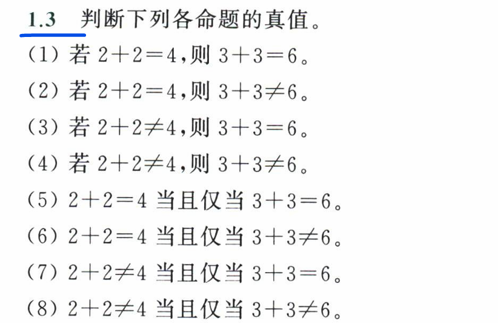
记 2 + 2 = 4 为 p，3 + 3 = 6 为 q。
- (1) \(p\rightarrow q\), 真
- (2) \(p\rightarrow \neg q\)，假
- (3) \(\neg p\rightarrow q\)，真
- (4) \(\neg p\rightarrow \neg q\)，真
- (5) \(p\leftrightarrow q\)，真
- (6) \(p\leftrightarrow \neg q\)，假
- (7) \(\neg p\leftrightarrow q\)，假
- (8) \(\neg p\leftrightarrow \neg q\)，真
其实就是考察两个联结词的真值表。
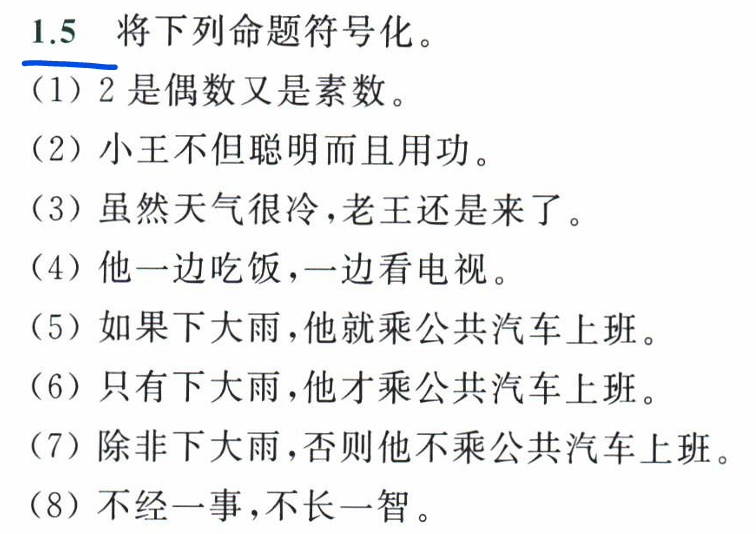
- (1) 记 “2 是偶数” 为 p，记 “2 是素数” 为 q，则命题符号化为 \(p\land q\)
- (2) 记 “小王聪明” 为 p，记 “小王用功” 为 q，则命题符号化为 \(p\land q\)
- (3) 记 “天气很冷” 为 p，记 “老王来了” 为 q，则命题符号化为 \(p\land q\)
- (4) 记 “他吃饭” 为 p，记 “他看电视” 为 q，则命题符号化为 \(p\land q\)
- (5) 记 “下大雨” 为 p，记 “他乘公共汽车上班” 为 q，则命题符号化为 \(p\rightarrow q\)
- (6) 记 “下大雨” 为 p，记 “他乘公共汽车上班” 为 q，则命题符号化为 \(q\rightarrow p\)
- (7) 记 “下大雨” 为 p，记 “他乘公共汽车上班” 为 q，则命题符号化为 \(q\rightarrow p\)
- (8) 记 “经一事” 为 p，记 “长一智” 为 q，则命题符号化为 \(q\rightarrow p\)
不……不 = 出发……否则不 = 只有……才
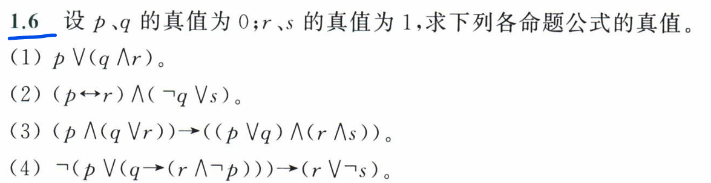
- (1) \(p\lor (q\land r)=0\lor (0\land 1)=0\)
- (2) \((p\leftrightarrow r)\land (\neg q\lor s)=(0\leftrightarrow 1)\land (\neg q\lor s)=0\) 这里可以直接利用 \(\land\) 的短路特性
- (3) \((p\land (q\lor r))\rightarrow ((p\lor q)\land(r\land s))=(0\land (0\lor 1))\rightarrow ((0\lor 0)\land(1\land 1))=1\) 同样是利用蕴含符号左边 \(\land\) 的短路特性得到那一坨是 \(0\) 然后再利用蕴含符号本身的短路特性得到结果
- (4) \(\neg (p\lor (q\rightarrow (r\land \neg p)))\rightarrow (r\lor \neg s)=\neg (0\lor (0\rightarrow (r\land \neg p)))\rightarrow (1\lor \neg 1)=1\rightarrow 1=1\)
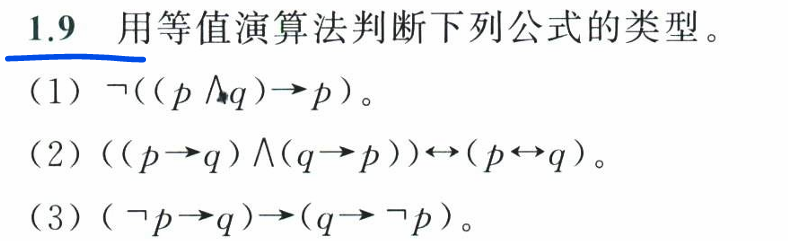
- (1) \(\neg((p \land q) \to p)=\neg (\neg (p \land q)\lor p)=(p \land q)\land \neg p=q\land( p\land\neg p)=0\) 为矛盾式。
- (2) \(((p \to q) \land (q \to p)) \leftrightarrow (p \leftrightarrow q)=(p \leftrightarrow q)\leftrightarrow(p \leftrightarrow q)=1\) 为重言式。
- (3) \((\neg p \to q) \to (q \to \neg p)=(\neg(\neg p) \lor q)\to (\neg q \lor \neg p)\)
\(=(p \lor q)\to \neg(q \land p)=\neg(p \lor q)\lor \neg(q \land p)=\neg(p \lor q\land q \land p)=\neg(p\land q)\) 为可满足式。
第二次作业
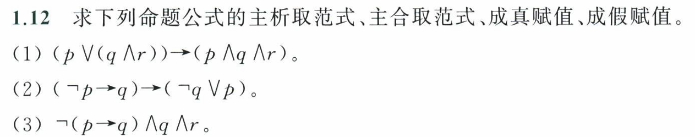
(1)
主析取范式：
\[
\begin{align*}
(p\lor(q\land r))\to (p\land q\land r)&\Leftrightarrow \neg(p\lor(q\land r))\lor (p\land q\land r)\\
&\Leftrightarrow(\neg p \land (\neg q\lor \neg r))\lor (p\land q\land r)\\
&\Leftrightarrow(\neg p\neg q(r\lor\neg r)\lor\neg p\neg r(q\lor\neg q))\lor(pqr)\\
&\Leftrightarrow(\neg p\land \neg q\land r)\lor(\neg p\land \neg q\land \neg r)\lor(\neg p\land q\land \neg r)\lor (p\land q\land r)
\end{align*}
\]
由此得到成真赋值和成假赋值：
\[
pqr_{\mathrm{成真赋值}} = \{000, 001, 010, 111\}\\
pqr_{\mathrm{成假赋值}} = \{011, 100, 101, 110\}
\]
主合取范式可由成假赋值直接得到：
\[
(p\lor(q\land r))\to (p\land q\land r)\Leftrightarrow(\neg p\lor q\lor r)\land(p\lor \neg q\land \neg r)\land(p\lor \neg q\lor r)\land (p\lor q\lor \neg r)
\]
(2)
主析取范式：
\[
\begin{align*}
(\neg p\to q)\to(\neg q\lor p)&\Leftrightarrow\neg(p\lor q)\lor(\neg q\lor p)\\
&\Leftrightarrow(\neg p\land \neg q)\lor(\neg q\lor p)\\
&\Leftrightarrow(\neg p\land \neg q)\lor(\neg q\land(p\lor \neg p)\lor p\land(q\lor \neg q))\\
&\Leftrightarrow(\neg p\land \neg q)\lor(p\land \neg q)\lor(p\land q)
\end{align*}
\]
由此得到成真赋值和成假赋值：
\[
pq_{\mathrm{成真赋值}} = \{00,10,11\}\\
pq_{\mathrm{成假赋值}} = \{01\}
\]
主合取范式可由成假赋值直接得到：
\[
(\neg p\to q)\to(\neg q\lor p)\Leftrightarrow p\land\neg q
\]
(3)
主析取范式：
\[
\begin{align*}
\neg (p\to q)\land q\land r&\Leftrightarrow \neg (\neg p\lor q)\land q\land r\\
&\Leftrightarrow(p\land \neg q)\land q\land r\\
&\Leftrightarrow0
\end{align*}
\]
由此得到成真赋值和成假赋值：
\[
pq_{\mathrm{成真赋值}} = \{\}\\
pq_{\mathrm{成假赋值}} = \{000,001,010,011,100,101,110,111\}
\]
主合取范式可由成假赋值直接得到：
\[
\neg (p\to q)\land q\land r\Leftrightarrow\\
(p \lor q \lor r) \land (p \lor q \lor \neg r) \land (p \lor \neg q \lor r) \land (p \lor \neg q \lor \neg r) \land (\neg p \lor q \lor r) \land (\neg p \lor q \lor \neg r) \land (\neg p \lor \neg q \lor r) \land (\neg p \lor \neg q \lor \neg r)
\]
第三次作业
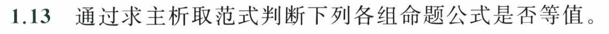
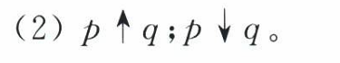
\[
\begin{align*}
p\uparrow q &\iff \neg(p\land q)\\
&\iff \neg p \lor \neg q\\
&\iff \neg p(q\lor\neg q)\lor \neg q(p\lor \neg p)\\
&\iff (\neg p\land q) \lor (p\land\neg q) \lor (\neg p\land\neg q)
\end{align*}
\]
\[
\begin{align*}
p\downarrow q &\iff \neg(p\lor q)\\
&\iff \neg p \land \neg q\\
&\iff \neg p(q\lor\neg q)\land \neg q\\
&\iff (\neg p\land \neg q)
\end{align*}
\]
因此不等值。
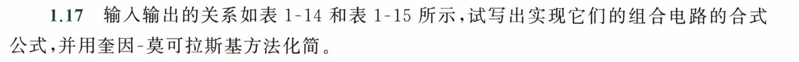
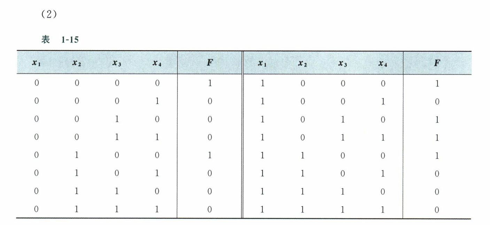
直接求成真赋值：
化简：
首先分组，然后进行合并：
- 0 个 1: 0000
- 1 个 1: 1000, 0100 => -000, 0-00 => 0-00
- 2 个 1: 1010, 1100 => 10-0, -100 => 10-0, --00
- 3 个 1: 1011 => 101-
这样得到了主蕴含项，然后列覆盖表：
| 0 4 8 10 11 12
0-00 x x
10-0 x x
--00 x x x x
101- x x
|
可见 --00 + 101- 可以完全覆盖，因此化简得到
\[
\begin{align*}
F=&\quad (\neg x_1\land\neg x_2\land\neg x_3\land\neg x_4)\\
&\lor (\neg x_1\land x_2\land\neg x_3\land\neg x_4)\\
&\lor ( x_1\land\neg x_2\land\neg x_3\land\neg x_4)\\
&\lor (x_1\land \neg x_2\land x_3\land \neg x_4)\\
&\lor ( x_1\land\neg x_2\land x_3\land x_4)\\
&\lor (x_1\land x_2\land\neg x_3\land\neg x_4)\\
=&\quad (\neg x_3\land \neg x_4)\lor(x_1\land \neg x_2\land x_3)
\end{align*}
\]
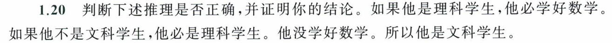
Notation:
\(L\)：他是理科学生；\(S\)：他学好数学；\(W\)：他是文科学生。
推理即：
\[
\begin{align*}
(L\to S)\land(\neg W\to L)\land(\neg S)\to(W)&\iff (\neg L\lor S)\land(W\lor L)\land(\neg S)\to(W)\\
&\iff (\neg L)\land (W\lor L)\to W\\
&\iff W\to W
\end{align*}
\]
为重言式，因此推理正确。
第四次作业
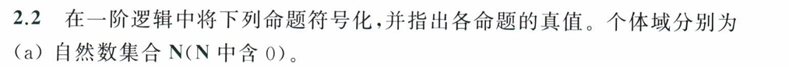
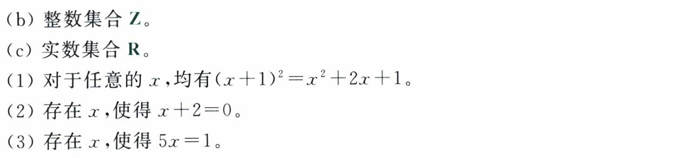
Notations:
\(F(x):=(x+1)^2=x^2+2x+1\)，\(G(x):=x+2=0\)，\(H(x):=5x=1\)
(1)
\[
\forall x F(x)
\]
在 (a), (b), © 中都为真。
(2)
\[
\exists xG(x)
\]
在 (a) 中为假，在 (b), © 中为真。
(3)
\[
\exists xH(x)
\]
在 (a), (b) 中为假，在 © 中为真。
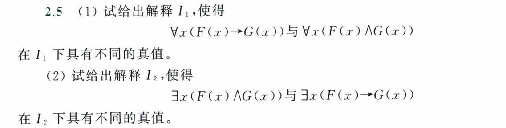
(1)
我们知道假命题蕴含真命题为真但是假命题合取真命题结果为假，因此我们可以构造 \(I_1\) 如下：
- 个体域：\(\{0\}\)
- 谓词 \(F(0)=0, G(0)=1\)
这样两个式子就变成了
\(F(0)\to G(0)=1\) 和 \(F(0)\land G(0)=0\) 是具有不同的真值。
(2)
易得 \(I_1\) 也满足 (2) 的条件，直接可以当成 \(I_2\)：
- 个体域：\(\{0\}\)
- 谓词 \(F(0)=0, G(0)=1\)
这样两个式子就变成了
\(F(0)\to G(0)=1\) 和 \(F(0)\land G(0)=0\) 是具有不同的真值。
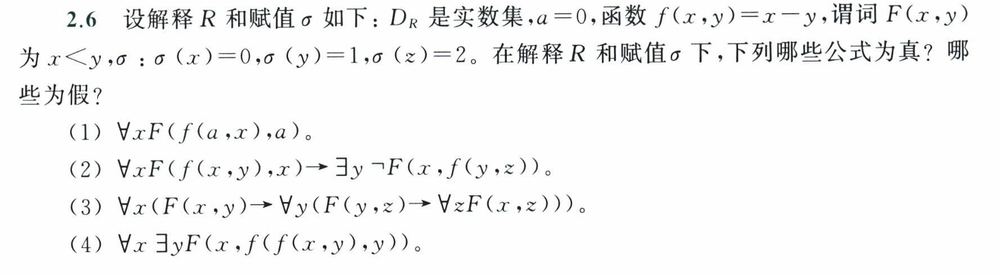
(1)
\[
\begin{align*}
\forall xF(f(a,x),a)&\iff \forall x(a-x <a)\\
&\iff \forall x(x>0)\\
&\iff 0>0\\
&\iff 0
\end{align*}
\]
(2)
\[
\begin{align*}
\forall xF(f(x,y),x)\to\exists y\neg F(x,f(y,z))&\iff \forall x(x-y<x)\to\exists y\neg (x<y-z)\\
&\iff y>0 \to \exists y\neg(0<y-2)\\
&\iff 1\to 1\quad (y=1)\\
&\iff 1
\end{align*}
\]
(3)
\[
\begin{align*}
\forall x(F(x,y)\to\forall y(F(y,z)\to\forall zF(x,z)))&\iff \forall x((x<y)\to\forall y((y<z)\to\forall z(x<z)))\\
&\iff \forall x((x<y)\to\forall y((y<z)\to 0))\\
&\iff \forall x((x<y)\to 0)\\
&\iff 0
\end{align*}
\]
(4)
\[
\begin{align*}
\forall x\exists yF(x,f(f(x,y),y))&\iff\forall x\exists y(x<x-y-y)\\
&\iff\forall x\exists y(y<0)\\
&\iff\forall x 1\\
&\iff 1
\end{align*}
\]
📝 如果您需要引用本文
Yan Li. (Oct. 8, 2025). 《离散数学》课程作业与笔记归档 [Blog post]. Retrieved from https://dicaeopolis.github.io/campus-sources/Descrete_assignments
在 BibTeX 格式中：
| @online{Descrete_assignments,
title={《离散数学》课程作业与笔记归档},
author={Yan Li},
year={2025},
month={Oct},
url={\url{https://dicaeopolis.github.io/campus-sources/Descrete_assignments}},
}
|